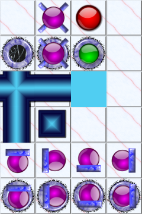

|
libsokoengine 2.0.0.dev
|
|


| |
|
libsokoengine 2.0.0.dev
|
|
|
| |
"Common skin format" is convention on how individual tiles are placed in skin image.
| tessellation | common skin format | skin image example |
|---|---|---|
| Sokoban | 
Sokoban common skins format |

Example Sokoban skin |
Skin tries to guess individual tile dimensions and position from whole image width and height. This guesswork requires that all tiles in image are squares. The only exception for this rule are some older 4x4 Sokoban skins that are allowed to have rectangular tiles:
| Sokoban rectangular skin |
|---|

Sokoban skin with rectangular tiles |
There is no similar "standard" for other tessellations (Hexoban, Trioban, ...) so libsokoengine implements it's own.
Bounding box of regular hexagon and equilateral triangle is not square. libsokoengine still requires that individual tiles are square. Actual tile images should then be aligned to bottom left of each square tile:
| tessellation | common skin format | skin image example |
|---|---|---|
| Hexoban | 
Hexoban common skins format |
Example Hexoban skin |
| Trioban |
Trioban common skins format |
Example Trioban skin |
See also: YASC skin tutorial
 1.8.17
1.8.17